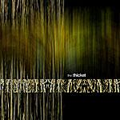

| Artist: | The Thicket |
| Title: | The Thicket |
| Label: | The Thicket Records TTR01 |
| Length(s): | 66 minutes |
| Year(s) of release: | 2003 |
| Month of review: | [08/2003] |
| 1) | Free Fall | 4.14 |
| 2) | Defiance | 7.05 |
| 3) | Canopy | 4.08 |
| 4) | Sunday | 6.58 |
| 5) | Kuskovo (Autumn) | 9.25 |
| 6) | Life On The Crescent | 3.55 |
| 7) | Beautiful Calamity | 7.56 |
| 8) | Snow | 8.01 |
| 9) | Wide Open | 8.16 |
| 10) | Catharsis | 5.38 |
Defiance is a vocal track, with a gentle piano melody, with a touch of Richard Clayderman, and gentle rhythm. Although basically unoffensive, some people might still be offended by it. After the instrumental section a sudden quick rhythm drags us into a sort of prog metal section, which sounds unsincere enough to make me wonder whether it's meant mockingly. After all these antics we move back to the original theme, but song with a bit more heart. This makes for a decent enough section.
Canopy is instrumental, mostly key oriented, with uninspiring drum computer sounds and some oddities that are more odd than ditties (Yes, I stole the pun).
The beginning of Sunday has a graveness and closeness that reminded me of a Joy Division track. This is completely lifted, or even blown away, by a sudden open almost happy sound, strengthened by the drum computer. From this mid to late eighties effect we move back towards the early eighties for a bit of waveish stuff. From this we get a bit of progressive and the return of Joy Division. Interesting hodgepodge this track is, with some up and down moments.
After intial uneventful skermishes we move into EM land, ruled by synth and drum computer. This moves on to Life On The Crescent which is basically more of what's gone past.
Beautiful Calamity brings us a vocal track. The wavering vocals and meandering keyboards can't exactly entice, although the vocal bends are pretty nice.
Snow has a bit of power metal in it, with the heavy guitars and at times tinkly keys, but synth carpets are too dominant to bring this idea home. The neurotic drums don't help much either. Wide Open starts happy eighties EM again. As it progresses it develops some Kashmir guitars.